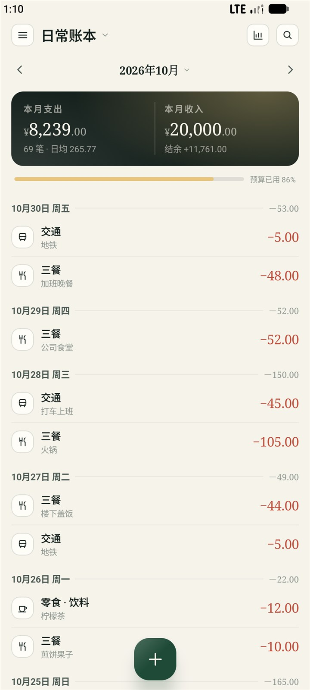
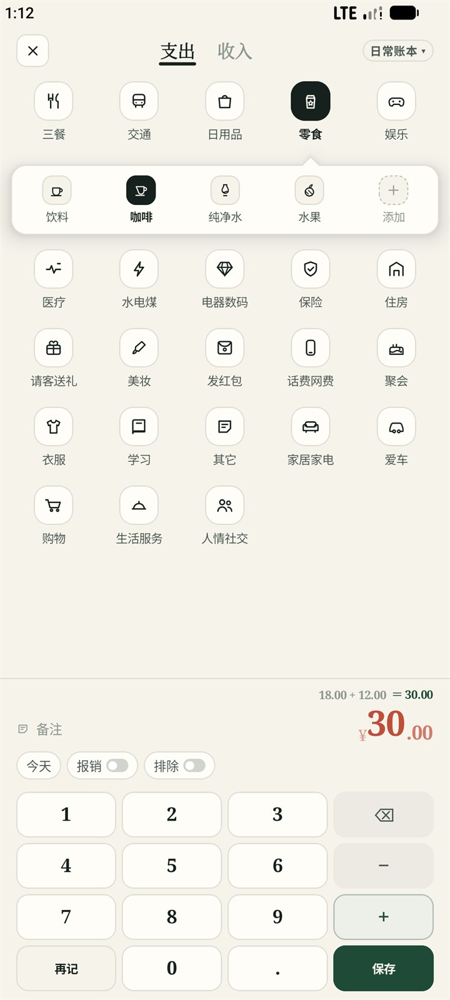
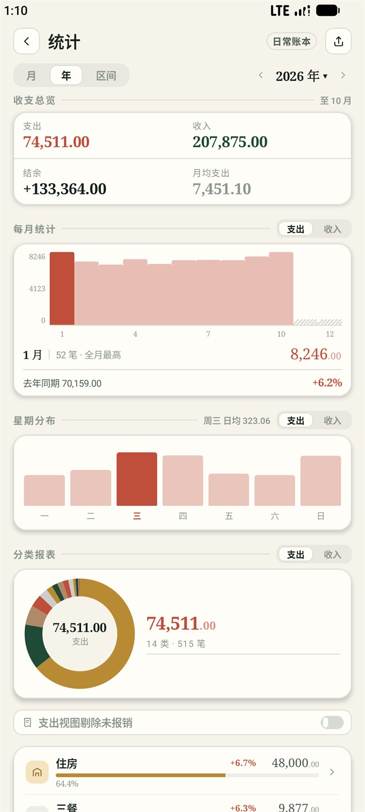
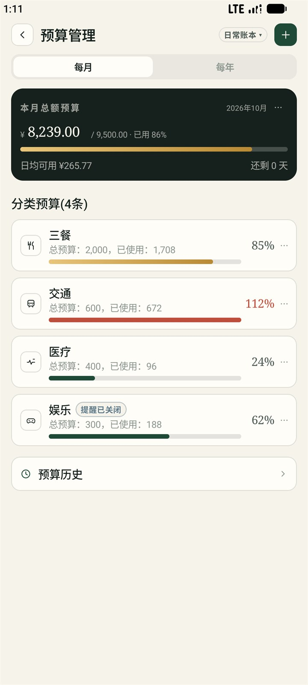
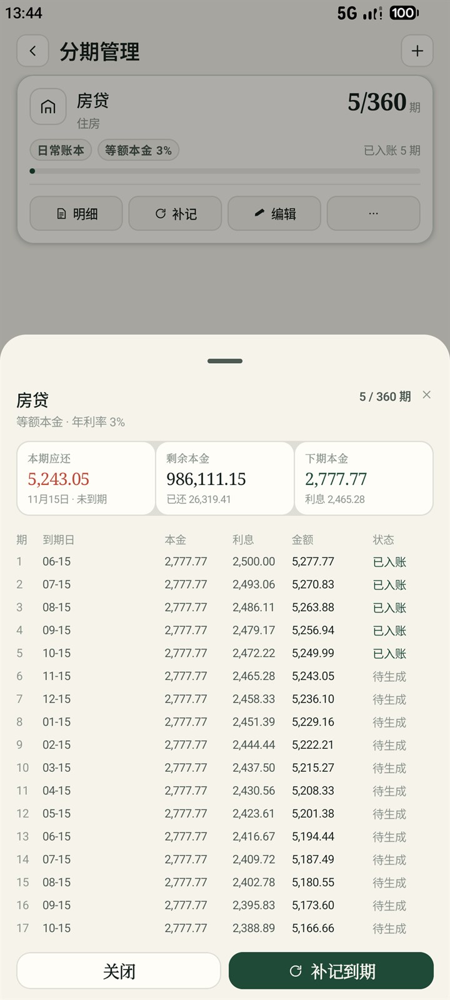
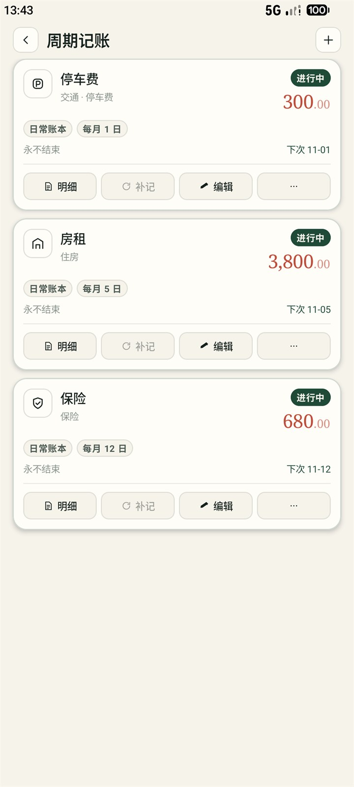
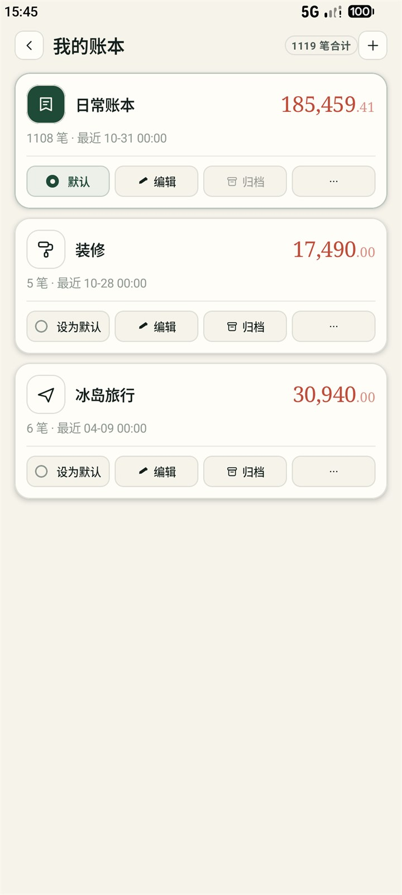
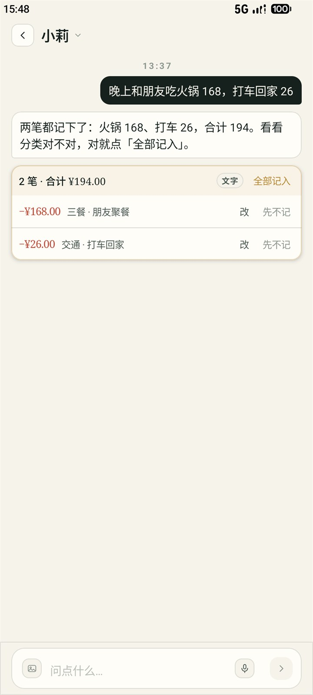
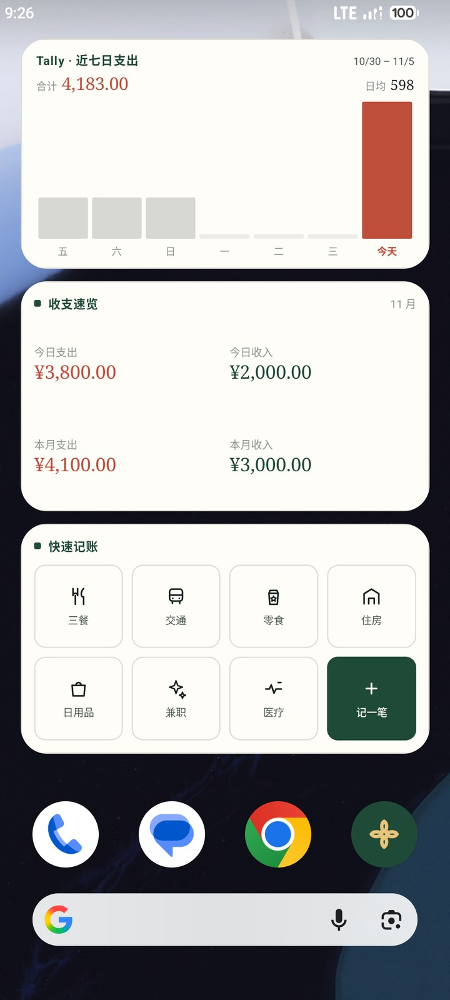
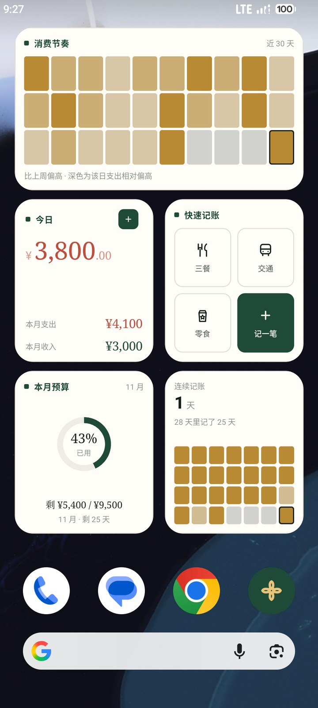

一本只存在手机里
的账本。
记账、看账、备份，全部在这台手机里完成。没有账号，没有服务器，一条数据都不上传。

它替你做的八件事
一件一句记一笔很快
点 ＋，输金额，选分类。键盘支持 38+12 这样直接算，按保存就是等号。
说一句就行
长按 ＋ 上滑，说「二十九块八毛五」就出 29.85。手机自己解析，不联网也能用。
截图也能记
从相册挑几张支付截图，手机自己认出金额和商户，一次最多 9 张。图片不出这台手机。
到期自动入账
房租、订阅、工资设一次就好；大额分期、房贷也替你按期记，到点和没记上都提醒一声。
预算心里有数
给这个月或这年设个上限，可以细到分类。快用完时提醒你，但不会满屏红字骂你。
几个本子，也能合起来看
日常、装修、买车各记各的；顶栏切到「全部账本」，看的就是总账。
统计看得懂
任意选一段时间，趋势、分类、星期分布一次给全。每个数字怎么算的，设置里逐条写着。
删错了能找回
删除先进回收站，按删除日期分组，保留期你自己定；桌面还能直接看今天和本月。
界面长这样
纸与墨 · 一处金晕纸面底色、墨绿主操作、支出陶土、收入墨绿。全站只有一处金色，留给可选的小莉。下面三屏是手机上的真实截图，示例账本记了 2025 到 2026 的每一笔；117 屏完整设计图在文档那一节。



还有这些
分期 · 周期 · 多账本 · 小莉一笔大额可以拆成每月一期，固定开销交给周期记账，装修和旅行各开一本；想少敲几下，就把一句话交给小莉。




桌面上那一小块
只看不动提供八枚桌面小组件——近七日、收支速览（小 / 四格）、快速记账（小 / 八格）、预算环、消费节奏、记账连续记录。全部只读，点一下回到 App；长按图标还有「记一笔」和「查看统计」两条快捷方式。


小莉（可选）
你的AI财务智能靠「什么时候出现」表达
不开小莉，在界面里寻找不到一丝金色的她。她只做两件事：对话里把一句话或几张图变成等你确认的账单卡，以及在统计页点一下才算一份分析。配置要自己填 Key，测通了才保存——不配置，前面那些功能照样用得完。
数据只在你手里
没有账号 · 没有服务器都在本机
账单、凭证图、偏好全存在这台手机的数据库里。App 没有账号体系，也没有自己的服务器——它想上传也没地方可传。
换手机是一个文件
导一个加密备份包出来，到新机上恢复，账就过去了；也可以导出 CSV 或 Excel，日后原样导回。备份包还能设置不含图片，先说清楚里面有什么。
只申请用得着的
麦克风（语音记账）、通知（到期与失败提醒）、网络（只在你主动用小莉或 WebDAV 时用）。不申请存储、定位、通讯录。
拿去用
没有商店 · 源码公开直接下载编好的 APK，装到 Android 9 及以上的手机；或者自己从这个仓库构建——签名文件随仓库带着，克隆下来就能出包，环境要求与构建命令写在 README 里。
安装包只含 arm64-v8a：2018 年后的主流机型都是这个架构，32 位老机器与 x86 模拟器装不上。
不做什么
边界写死文档
都在 docs/release/许可与可获得性
说清楚，不藏着本项目采用 Business Source License 1.1（BUSL-1.1）。它是 Source-Available——中文规范叫法是「源码可用许可 / 商业源码许可」， 不是 OSI 定义的开源许可：源码可以读、可以改、可以构建、可以装到自己手机上用；不能拿它做成商品或服务提供给第三方。 每个版本在 Change Date（最早 2030-11-01，或该版本首次公开分发满四年，取更早者）自动转为 GPL-2.0-or-later，届时它就是真正的开源软件。
没有应用商店版本，Release 上提供编好的 APK，源码与构建方式都在这个仓库里。依赖全部 Apache-2.0，136 枚图标与界面图形都是本仓库手画的矢量，字体用系统字体族——App 内「设置 → 许可与依赖」有同一份清单。